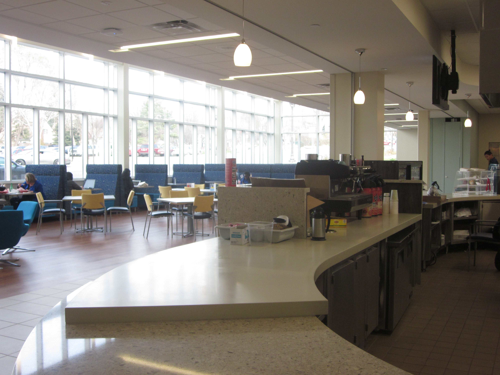
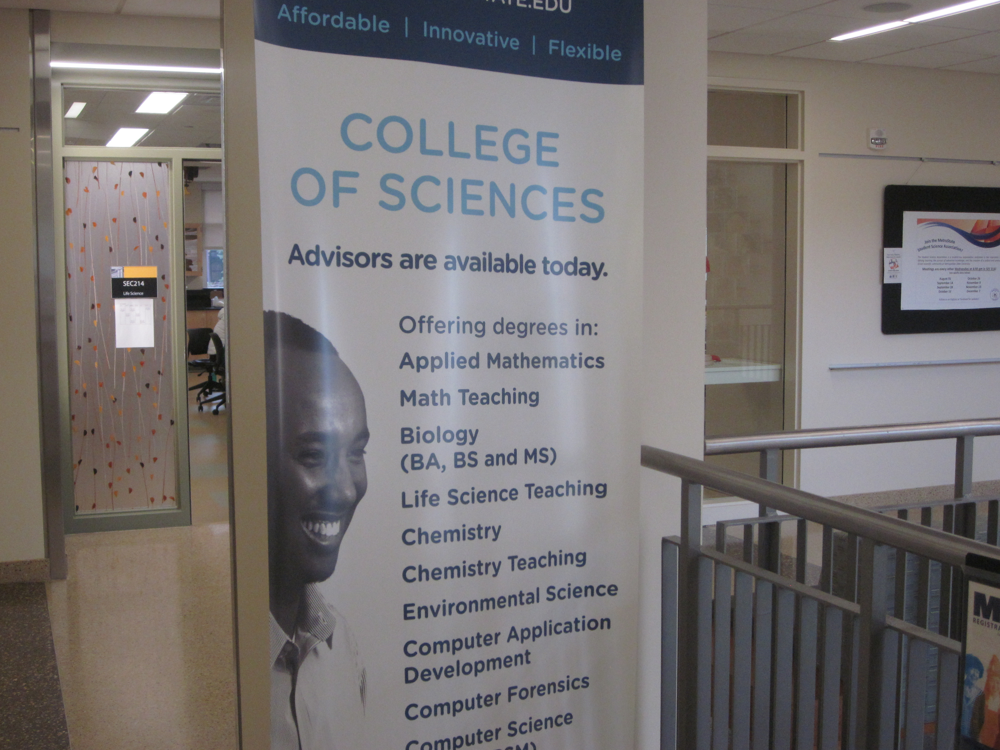
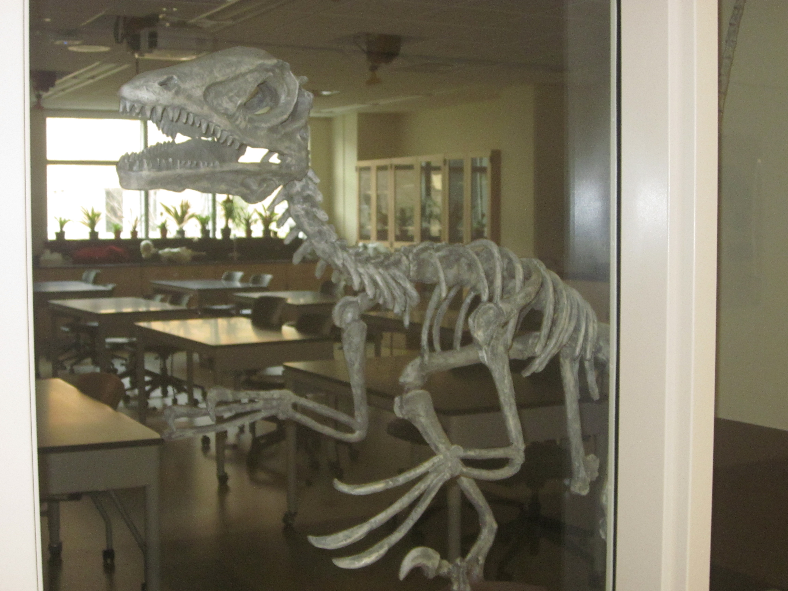
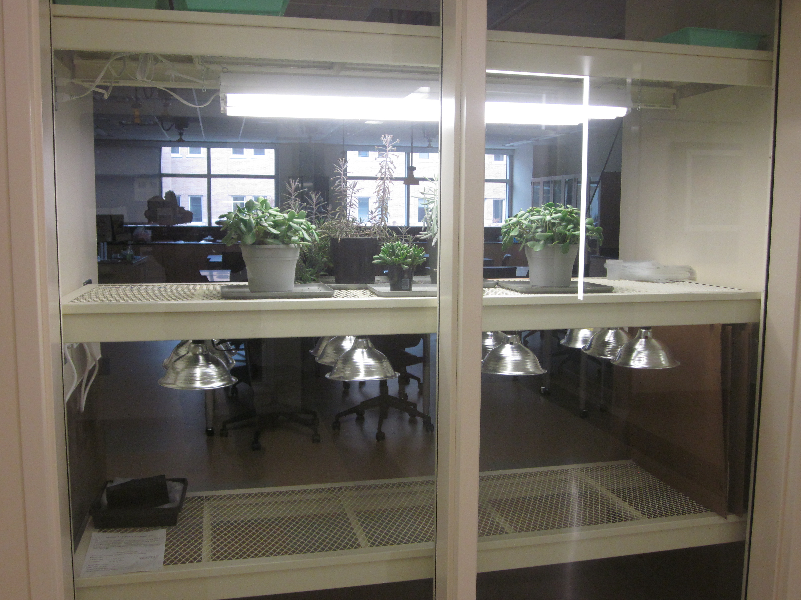
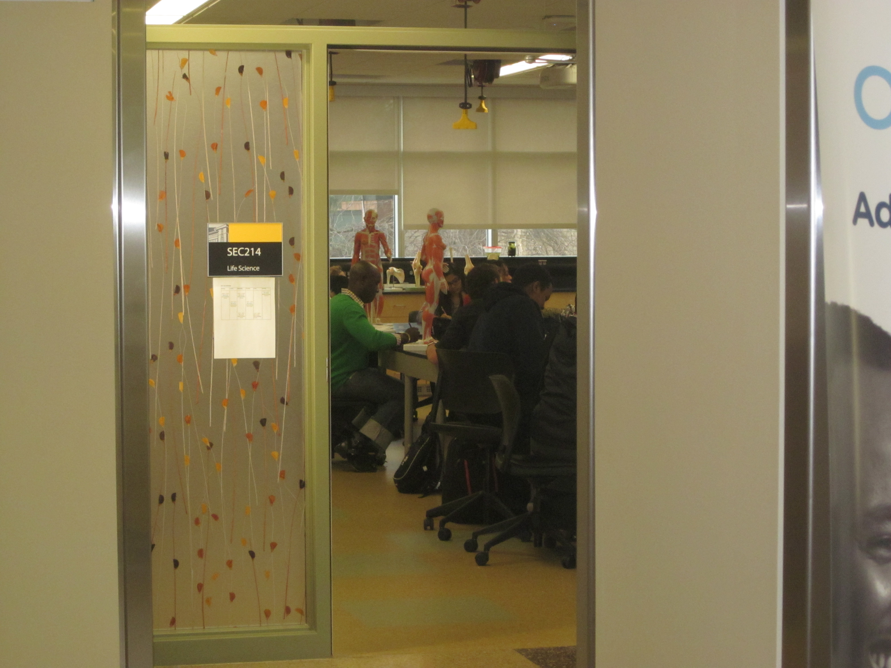
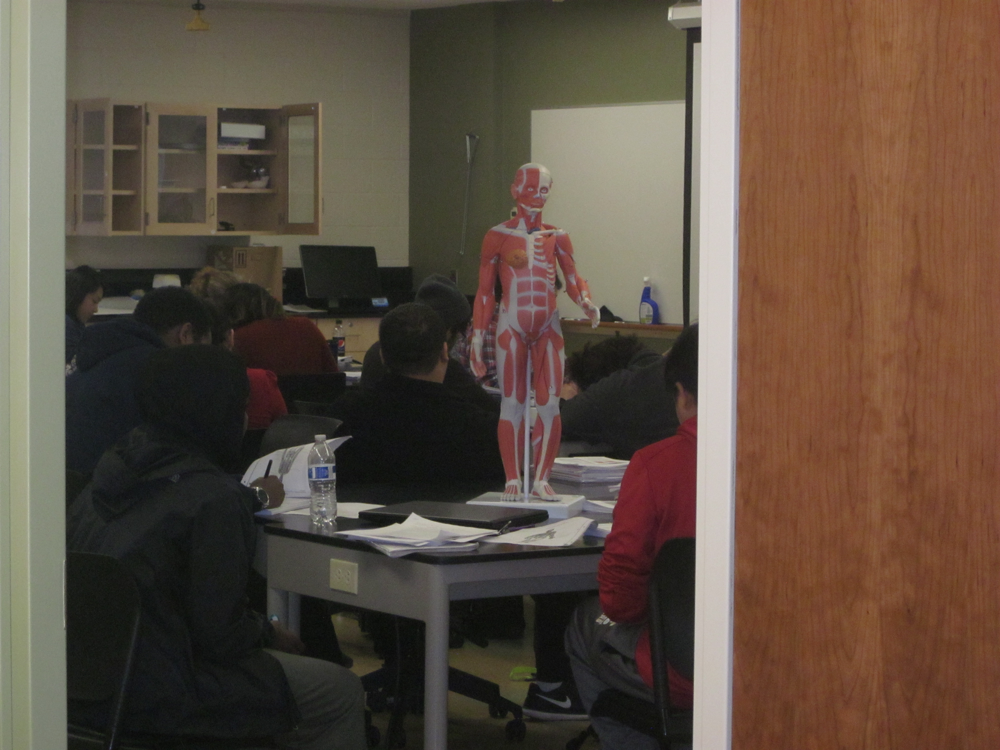
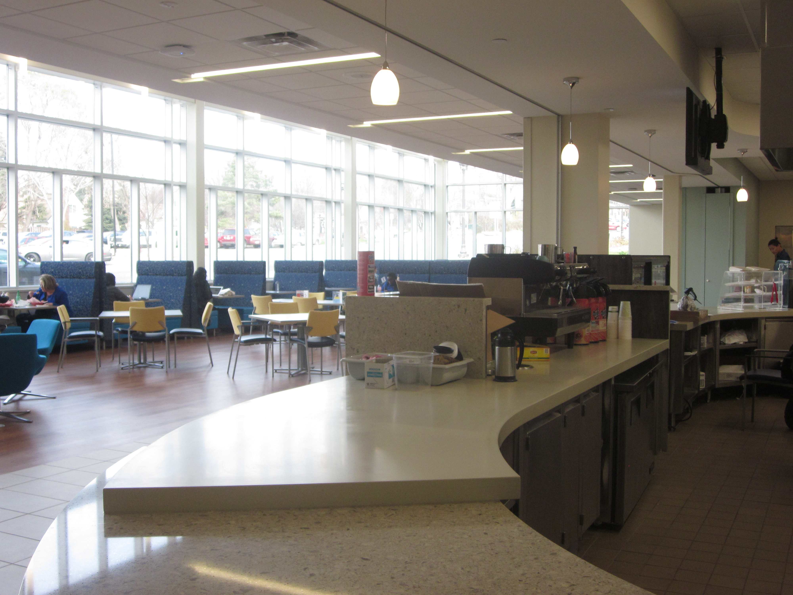
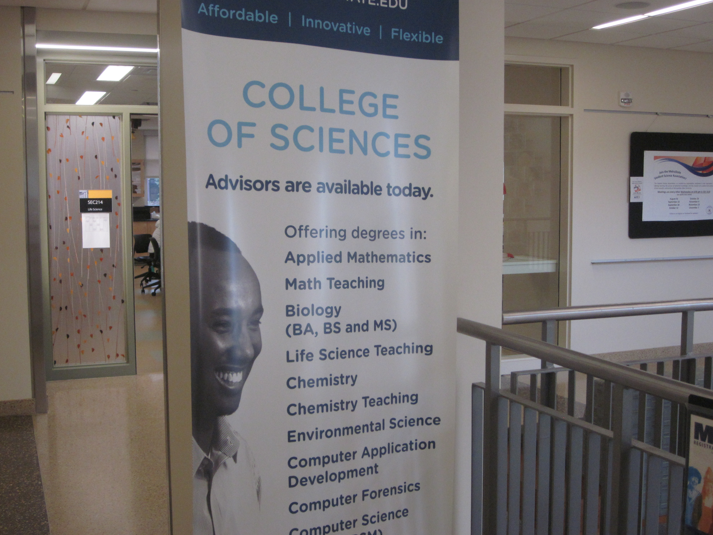
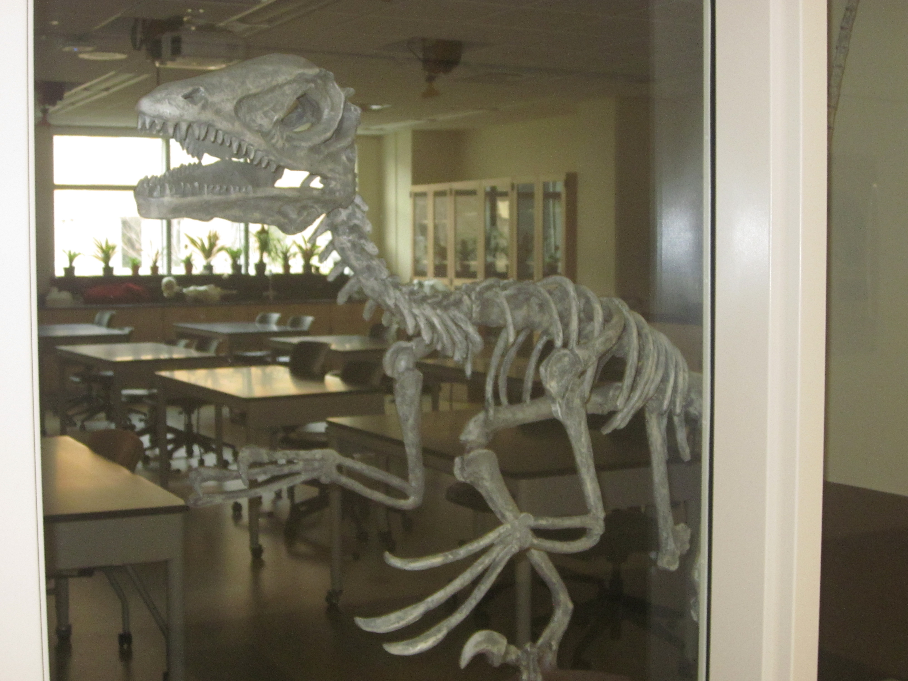
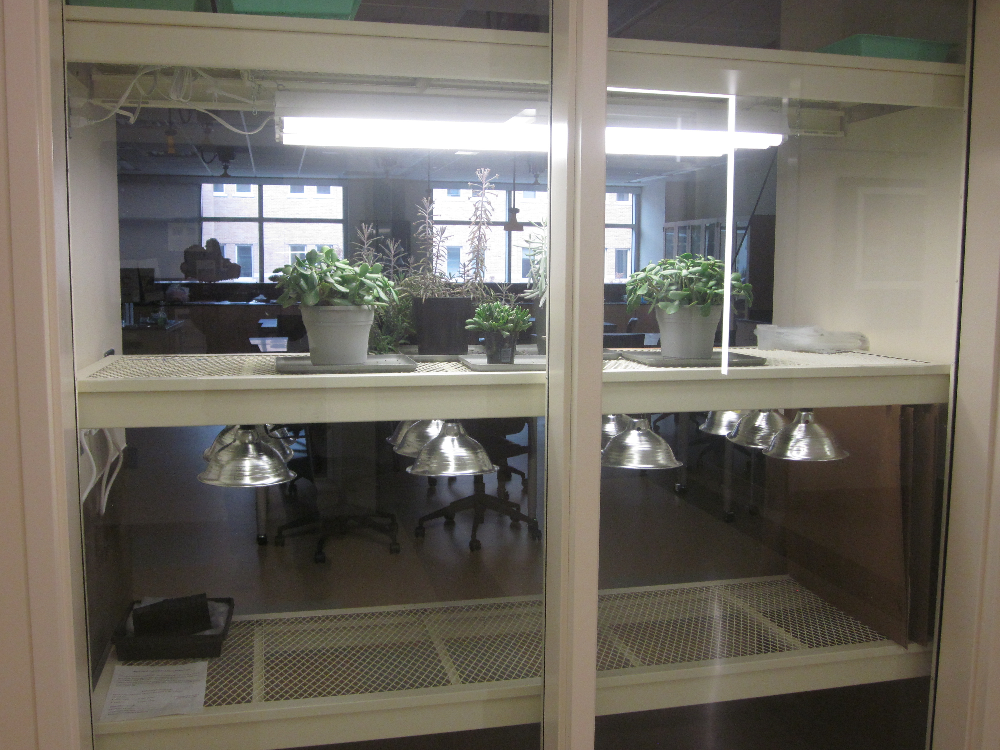
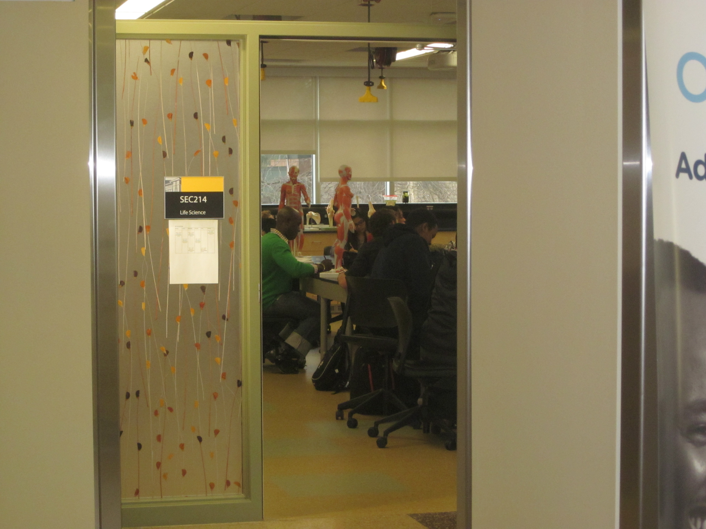
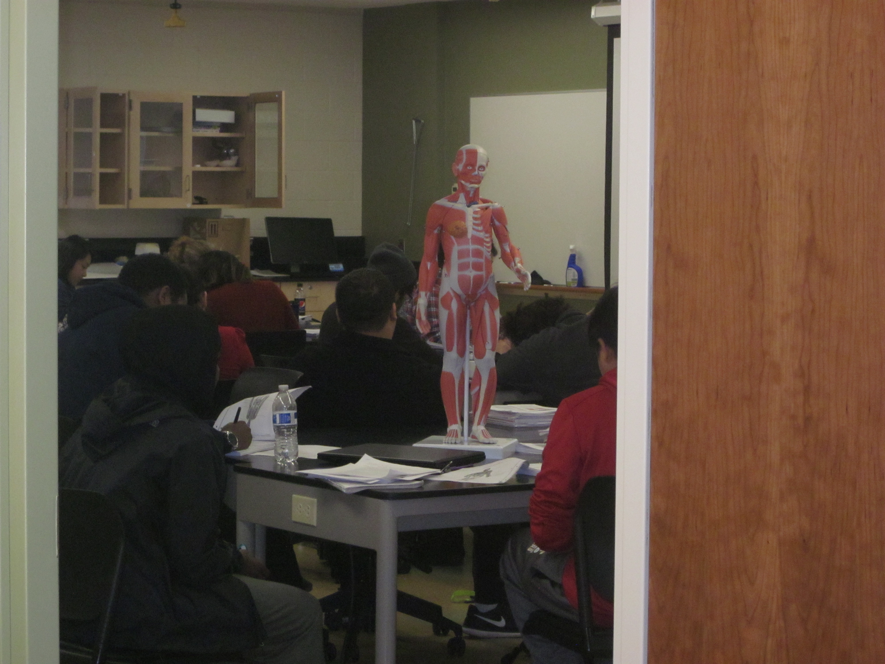
Fall semester 2016 marked the one-year anniversary for the opening of the Student Center and Science Center (and parking ramp) at Metropolitan State. Usage of these newest additions has really taken hold.
A food vendor for the cafeteria has been found and is up and cooking. Alimama’s Mediterranean Grill is located on the first floor of the Student Center, serving up cheeseburgers, burritos, gyros, chicken curry and sambusa, which come with a side salad or fries (crispy with a savory seasoning—darn tasty). The friendly clerk said business has been good and he expects it to get busier as more people find out about them.
The open and airy cafeteria—which faces East Seventh Street—is abuzz with students and teachers. Some are eating and talking in groups, while others are sitting alone, either reading or working on laptops. Off to one side there is also a small market that offers a variety of items, from nuts to chips to sweets to drinks.
The Student Center’s first floor also houses several computer work stations and a lounge area with tables and chairs—and a fireplace. There is a large conference room and two study rooms, one of which offers a children’s play area. There is also a security desk, where Renae Edwards sits as well during her work study. “It’s a very busy place,” she says. “The study rooms are staying busy with finals coming up. Then there are other students who book the rooms for the whole semester.”
The Student Center’s second floor offers a meeting room, a quiet study room and a reflection room, ideal for those seeking a serene space for prayers or meditation. There is also a large room housing offices for several student organizations, including Student Senate and The Metropolitan. There is a fitness center as well, which students can use free of charge. There are lockers and two gender-neutral shower rooms.
Students just need to check in at the first-floor desk where they fill out a short form. They then trade their student ID for a fitness center pass with a number that matches their locker. When finished, students then trade back the pass for their ID. Edwards knows about 10 “regulars” who use the fitness center every day, with several others using it a few times a week. Another facet that Edwards noticed throughout the Student Center is “the plethora of plug-ins for laptops and other devices.” With the exception of it closing one-half hour sooner, the fitness center is open the same hours as the Student Center.
The Science Center is a three-story structure catering to such disciplines as geography, geology, chemistry, biology and physics. Just walking the hallways, one finds an abundance of information, most of which comes from the studies and research of Metro State’s science professors. “I love it here,” said Chee Xiong, a biology major and chemistry minor student in pursuit of his medical degree. “It’s an amazing facility, they give us everything we need,” he added.
Jenny Chehili has been at Metro State eleven years, as a student and staff member (for several years she did double duty as both). Having graduated with a natural sciences degree, Chehili is now on staff as a faculty assistant for the Math and Science Department. She came over to the new Science Center in March of 2016. “It’s a very busy place, the study rooms are almost always occupied,” Chehili said.
Chehili and Xiong joked that he “pretty much lives here [at Metro State].” Chehili added, “The students are friendly and very committed, and the professors have made themselves readily accessible to students. It’s a very open-door atmosphere.” Regarding the facility, Chehili said, “The labs and equipment available really aid in advancing the students’ learning experiences.”
Both the Science Center and Student Center are first-class, welcoming additions that enhance and reflect all that Metro State has to offer.